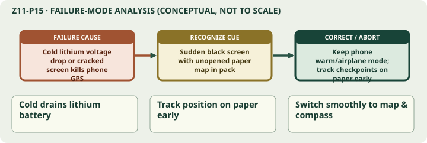

Z11-P15 · Navigation, weather and rescue · Adapted historical material
Continue navigating safely when phone batteries or GPS fail in cold
Transition smoothly to paper map and compass when subfreezing temperatures, cracked screens or dead batteries knock out electronics.
When it applies · Cold-weather travel, wet storms or multi-day trips carrying smartphone navigation apps or handheld GPS.
Equipment · Paper topographic map in waterproof sleeve, baseplate compass, warm inner pocket for phone and spare power bank.

Actions
- Protect phones and GPS units against rapid lithium-battery voltage drop by carrying them in an insulated inner pocket on airplane mode, pulling them out only briefly for scheduled checks.[E02, E10, ED]
- Track your current position continuously on the paper map at each major junction BEFORE the phone dies—a paper map is far harder to match if you only open it after getting lost.[E02, N01, ED]
- The instant electronics shut down, switch cleanly to oriented paper map, compass and unmistakable terrain handrails, or turn back early if your return margin depends on lost digital tracks.[E02, T06, N08]
Failure recognition · Hiking six miles solely by watching a blue GPS dot on a cold phone in an outer pocket, then having the screen go black at dusk with an unopened paper map.[E02, T06]
Verify · Confirm your paper map shows your current confirmed checkpoint right now and remains legible without battery power.[E02, ED]
Stop or change course · If electronic failure coincides with poor visibility or uncertain position on paper, stop moving, shelter and stay findable rather than wandering.[E02, N07, T06]
Evidence and editorial notes
- E02 · NPS · Ten Essentials (current web edition)
- Section: Navigation; insulation; emergency shelter; emergency food and water · Conditions: Outdoor trips; adjust kit to season and route
Support: Carry essential systems including navigation, insulation, light, water and emergency shelter.
Limitations: Carrying items without practice or cold-weather verification does not ensure readiness. · Conflicting evidence: None; baseline kit system architecture.
Editorial note: Supports failure-mode packing and kit verification cards. · Specialist reviewer: Field education and search and rescue
Primary source · checked 2026-11-24 - E10 · NWS · What To Do If You're Caught in a Winter Storm (current web edition)
- Section: Outside > Protect yourself from frostbite and hypothermia · Conditions: Outdoor winter storm
Support: Keep clothing dry and avoid overexertion. Wetness accelerates cooling.
Limitations: Cotton retains moisture and accelerates conductive and evaporative heat loss. · Conflicting evidence: None; reinforces moisture-management layering.
Editorial note: Links sweat management to overnight insulation integrity. · Specialist reviewer: Cold-weather shelter and wilderness medicine
Primary source · checked 2026-11-24 - N01 · USGS · US Topo Maps for America (current web edition)
- Section: US Topo Maps > Coordinate Grids, Scale and Currency · Conditions: Map reading and trip planning in the United States
Support: USGS topographic maps provide elevation contours, hydrography, roads, land cover and scale/date metadata; check publication date because trails, roads and structures change over time.
Limitations: Historical topo sheets (such as 1965 Ely quadrangle) illustrate symbols only and never establish current routes or declination. · Conflicting evidence: None; aligns with USGS-MAP-R and NOAA-D.
Editorial note: Grounds map margin, scale, date and historical-excerpt limits in Z11. · Specialist reviewer: Cartography and navigation
Primary source · checked 2026-11-24 - N07 · NWS · Fog Safety (current web edition)
- Section: Fog Safety > Visibility Loss and Travel Hazards · Conditions: Dense fog, valley mist, sea fog and blowing-snow whiteout
Support: Fog and whiteout collapse visual landmarks and depth perception rapidly, causing disorientation and unintentional terrain/traffic hazards; halt exposed travel early and rely on verified checkpoints or stay put.
Limitations: Compass bearings alone cannot reveal hidden cliffs, thin ice or drop-offs in zero visibility. · Conflicting evidence: Aligns with B014-P11 whiteout guidance.
Editorial note: Supports whiteout/fog stop thresholds and short-leg navigation boundaries. · Specialist reviewer: Meteorology and search and rescue
Primary source · checked 2026-11-24 - N08 · NOAA NCEI · Magnetic Declination (current web edition)
- Section: Magnetic Declination > Local Anomalies and Compass Interference · Conditions: Using magnetic baseplate compasses near metal, electronics or iron-rich rock
Support: True north, grid north and magnetic north differ by local declination; additionally, nearby phones, vehicles, knives, steel poles and localized magnetic rock (e.g., northern Minnesota iron formations) deflect compass needles erratically.
Limitations: Never assume a compass needle reads true magnetic field while held near gear, vehicles or iron ore. · Conflicting evidence: Aligns with B014-P13 and B014-P14.
Editorial note: Grounds declination conversion, metal-clearance and magnetic-anomaly cards. · Specialist reviewer: Navigation and geophysics safety
Primary source · checked 2026-11-24 - T06 · NPS · Outdoor Emergency Plan (current web edition)
- Section: If you get lost or hurt; call for help · Conditions: Outdoor US emergency
Support: Communicate location, last known point, situation and needs. Stay put when unable to establish a safe route unless immediate danger requires movement.
Limitations: Cell signal is unreliable in backcountry terrain; pre-trip plans bridge communication gaps. · Conflicting evidence: None; core lost-person decision rule.
Editorial note: Foundation for stay/signal/move and dispatch handoff cards. · Specialist reviewer: Search and rescue
Primary source · checked 2026-11-24
Source lineage · B014-P15 phone failure and NPS Ten Essentials; adapted historical material · Classification · Adapted historical material.